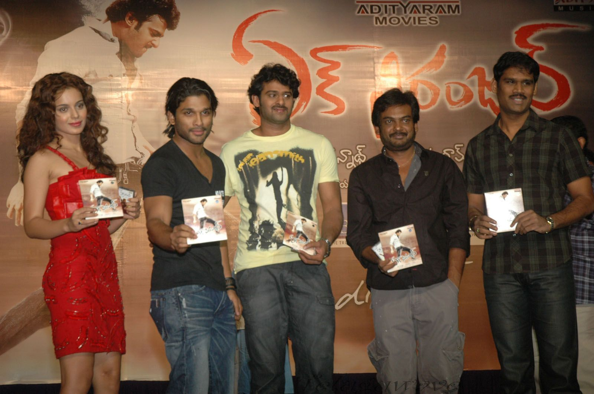

2002–2011: Debut and breakthrough
Prabhas (third from left) along with Kangana Ranaut, Allu Arjun, Puri Jagannadh, and Aditya Ram during the film Ek Niranjan's audio release
Prabhas started his movie career with Eeswar in 2002. In 2003, he was the lead in Raghavendra. In 2004, he appeared in Varsham and Adavi Raamudu. In 2005, he appeared in Chakram and in the film Chatrapathi, directed by S. S. Rajamouli, in which he portrays the role of a refugee, exploited by goons. It had a 100-day run in 54 centers.[18] Idlebrain.com stated that he had a unique style and macho charm in his screen presence.[19] Later he acted in Pournami, Yogi and Munna, an action-drama film came out in 2007, followed by the action-comedy Bujjigadu in 2008. In 2009 his two films were Billa and Ek Niranjan. Indiaglitz called Billa stylish and visually rich.[20]
In 2010 he appeared in the romantic comedy Darling. The film opened to positive reviews. The Times of India gave a two and half star rating explaining "Director Karunakaran extracts good performances from his actors, but can't come up with a refreshing plot. It looks like the director hasn't really come out of his Tholi Prema hangover as he dishes out yet another one-sided love saga but fails to come up with a valid and logical reason to make a Gen Z lad to hold back his feelings for his lover until the last moment. However, he compensates it all, by adding loads of fun moments in the film and the screenplay does have its share of some touching moments."[21] In 2011, he appeared in Mr. Perfect, another romantic comedy. The review site GreatAndhra rated the film with three stars and noted "The film comes across as a clean, family entertainer and the intention of the makers must be appreciated.
